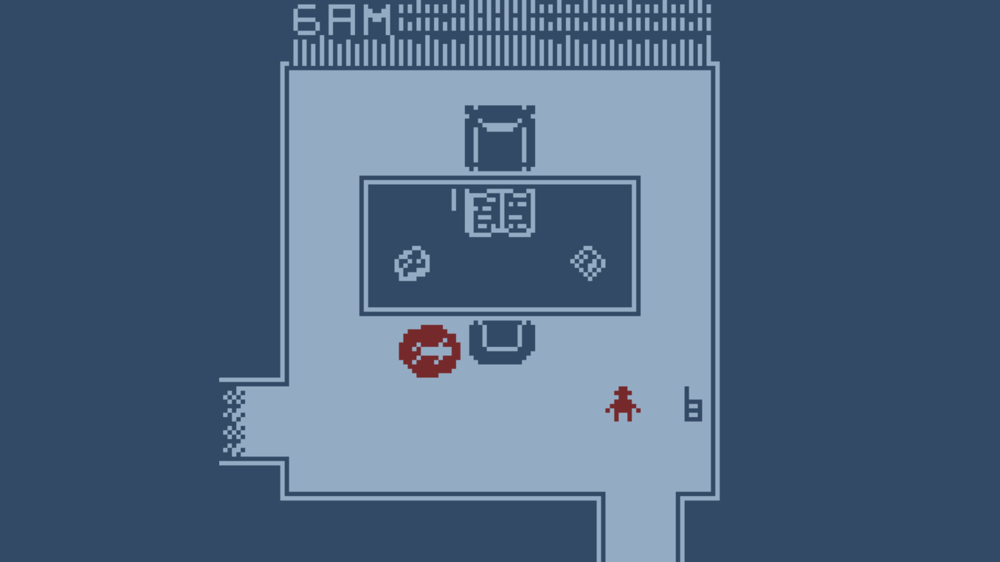
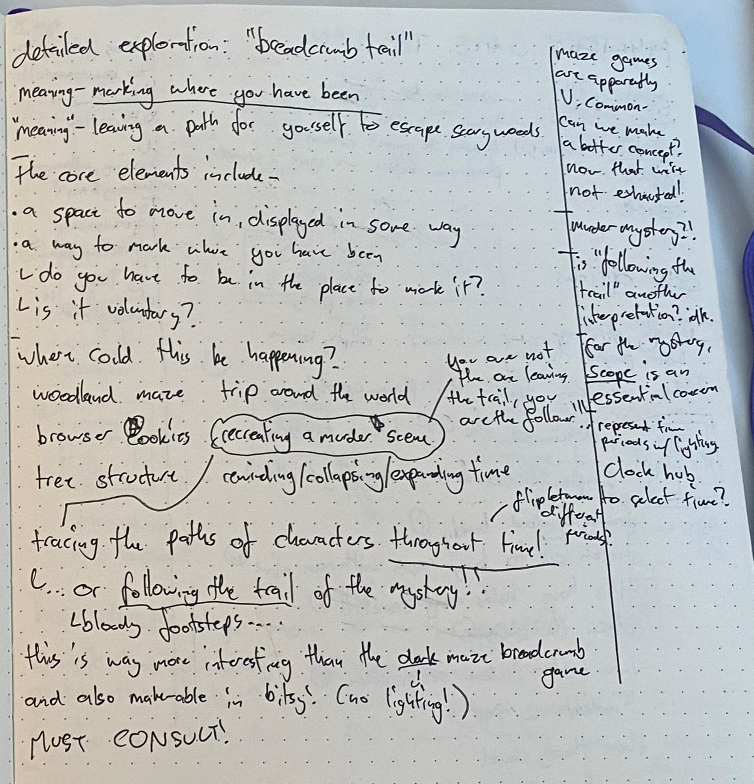
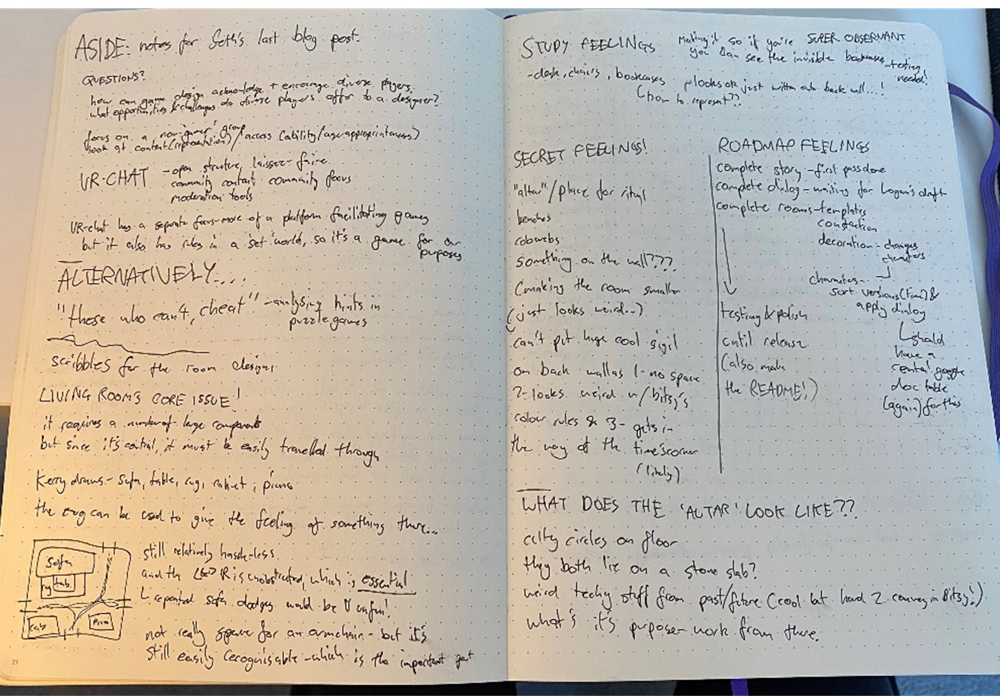
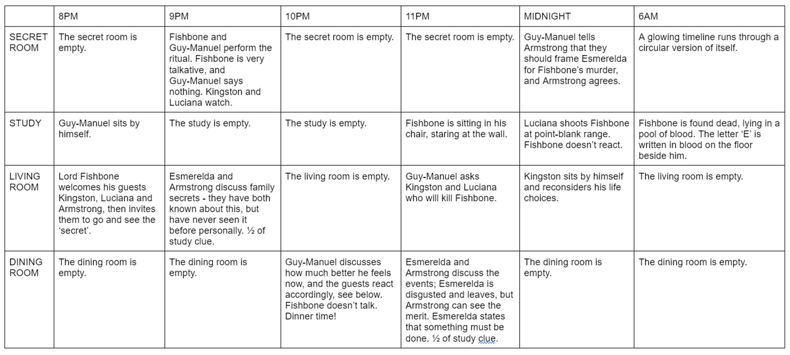

Overview
Holy Summit is a Bitsy game about a time-travelling detective.
I was responsible for leading the game's design and writing, working alongside Logan King and Kerry Chen from November to December 2023. Check it out on itch.io!

We started the game off dramatically, standing over the body of Lord Fishbone!
Setting restrictions
We were tasked to design and build a game in one month to a set theme, for which we chose "breadcrumb trail". After some brainstorming, we interpreted this as a murder-mystery, where the player could "follow the trail" of the killer.
However, at this point in the course none of us were confident enough programmers to tackle building a game in Unity, and so instead chose to crunch it down into a Bitsy game, and I imposed the further restriction that the game wouldn't use conditional logic - I'd have to design without code! This was a very fun restriction to work around, and ensured that I'd be focusing on the design rather than the details of the implementation.

We reintrepreted "breadcrumb trail" as "murder-mystery" once we heard that other groups also planned to make games about mazes!
A time-travelling detective
These limitations lead us to the game's defining feature! We had to present static scenes for the player to investigate, and they should be spread out over time so the player could track how the characters change. We didn't want to incorporate a "time selection" room, as that would have made the gameplay clunky and slow, and so instead landed on the idea of moving between time periods simply by moving through rooms.
The player could exit through the top and bottom of the screen to move to another room in the house, and exit to the left or right to move to the same room in the past or future. This is something that players seemed to grasp intuitively, and meant that they could cross-reference stories across time simply by walking around.

We redesigned the manor's rooms to be easier to navigate and cross-reference without sofas getting in your way!
A five-minute mystery
I was very aware that this game would be played by half-interested visitors to our course's small event, and so chose to design a mystery that would grab the player's attention, and allow them to solve it within five minutes. I settled on a simple two-part structure: the player would explore the house and meet its residents, but be left with unanswered questions. Some characters would give hints towards the location of a secret room that holds a dark secret, and upon its discovery, the player could piece together the full story.
This limitation also strongly influenced our narrative: without the time or space to properly set the scene, we relied heavily on tropes the player would likely be familiar with, and even derived inspiration for the characters from An Inspector Calls, which most of us studied in school. We had to get players comfortable and interested as quickly as possible, so having an innovative narrative wasn't important or practical!

Logan and I used a big table to lay out clues and plan the dialougue.
Reflection
I look back on Holy Summit quite fondly: I think the game's gimmick of spatially-driven time travel is genuinely cool, and I was proud of how we designed around such tight limitations. However, the impact of the story was limited, both by the game's indistinct character designs, and its need for further iteration! We did some light playtesting, but there was room for greater revisions if we had the time. Overall though, for a one-month Bitsy project it's pretty good! I hope to one day revive this game's mechanics in a larger game.

Kerry's delightfully dramatic poster!